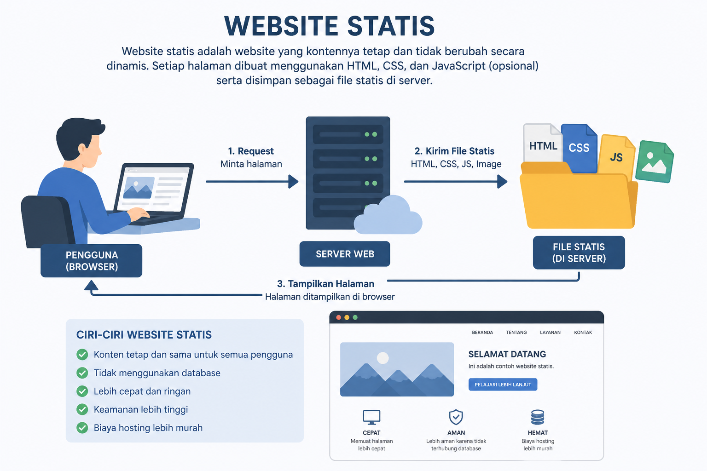

Website Statis
Website statis adalah jenis website yang kontennya bersifat tetap atau permanen, di mana setiap pengunjung akan melihat tampilan dan isi yang sama persis setiap saat. Website ini dibangun hanya dengan menggunakan bahasa pemrograman sisi klien (client-side) seperti HTML dan CSS, terkadang ditambah sedikit JavaScript untuk animasi sederhana, tanpa melibatkan pemrosesan basis data (database) atau bahasa server yang kompleks.

Secara teknis, ketika seseorang mengakses website statis, server hanya perlu mengirimkan file yang sudah tersedia langsung ke browser pengguna. Karena tidak ada proses "merakit" data secara mendadak, website ini biasanya sangat cepat dan ringan. Namun, setiap kali pemilik ingin mengubah informasi di dalamnya, mereka harus mengedit kode file tersebut secara manual, sehingga kurang praktis untuk situs yang butuh sering diperbarui.
Kelebihan Website Statis
Website statis menawarkan beberapa keunggulan utama, terutama dari sisi teknis dan efisiensi operasional:
- Kecepatan Akses yang Luar Biasa: Karena tidak perlu memproses data dari database, server bisa langsung mengirimkan file ke pengunjung. Hal ini membuat waktu muat halaman jauh lebih cepat dibandingkan website dinamis.
- Keamanan yang Lebih Tinggi: Tanpa adanya basis data atau bahasa pemrograman sisi server, celah untuk serangan siber seperti SQL Injection hampir tidak ada. Website ini jauh lebih sulit untuk diretas.
- Biaya Hosting Lebih Murah: Website statis membutuhkan sumber daya server yang sangat kecil. Banyak layanan menyediakan hosting gratis atau sangat murah untuk jenis website ini (seperti GitHub Pages atau Netlify).
- Pemeliharaan yang Sangat Mudah: Anda tidak perlu khawatir tentang pembaruan software server, database, atau plugin keamanan secara rutin. Sekali diunggah, website akan terus berjalan stabil.
- Skalabilitas Tinggi: Website ini sangat kuat menahan lonjakan pengunjung yang besar secara tiba-tiba tanpa membuat server menjadi lambat atau down.
Kekurangan Website Statis
Kekurangan utama website statis terletak pada keterbatasan fungsionalitas dan efisiensi pengelolaannya, terutama untuk penggunaan jangka panjang:
- Pembaruan Konten yang Rumit: Setiap kali ingin mengubah isi website, Anda harus mengedit kode HTML secara manual. Jika perubahan dilakukan pada elemen global (seperti menu), Anda harus mengubahnya di setiap file satu per satu.
- Minim Interaktivitas: Website ini tidak mendukung fitur yang memerlukan input pengguna secara kompleks, seperti sistem login, kolom komentar, keranjang belanja, atau fitur pencarian internal.
- Tidak Ada Personalisasi: Semua pengunjung akan melihat konten yang sama persis. Website tidak bisa menyesuaikan tampilan berdasarkan lokasi, waktu, atau preferensi pengguna tertentu.
- Sulit Dikelola untuk Skala Besar: Semakin banyak jumlah halamannya, semakin sulit website statis untuk dikelola. Hal ini membuatnya tidak cocok untuk blog besar, portal berita, atau toko online.
- Butuh Kemampuan Teknis: Karena tidak memiliki panel admin (CMS), pengelola website harus memahami dasar-dasar pemrograman (coding) untuk sekadar mengganti teks atau gambar.